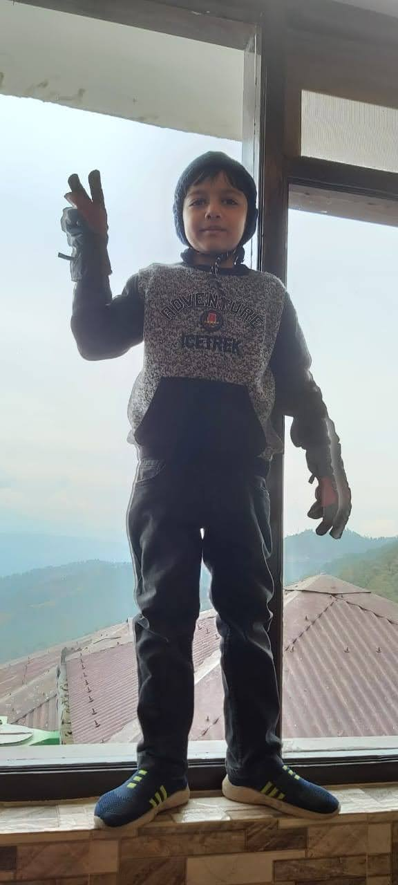

Nishv Patel Portfolio
I am a web developer

I am a cute, smart developer and gaming enthusiast.
My Projects
Movie ranking project
Birthday Project
My Skills
Studying: ⭐️⭐️⭐️⭐️⭐️
Gaming: ⭐️⭐️⭐️⭐️⭐️
Mischief: ⭐️⭐️⭐️⭐️⭐️⭐️⭐️⭐️⭐️⭐️
About Me
Contact Me